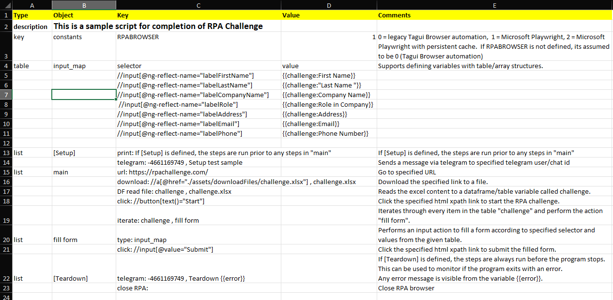

Creating Automation Flows
Introduction to Basic concepts of creating your automation flows in Excel.
Basic Concepts
Creating automation flows in OPTIMUS is as simple as writing a cooking recipe.
And just like a cooking recipe, OPTIMUS scripts consist of a list of action steps. These steps are defined in a table in Excel, which follows a specific structure that OPTIMUS is able to process.
Excel Script Structure

Automation scripts require following header fields: Type, Object, Key, Value and Comments.
You can refer to the screenshot below for an example OPTIMUS script that is used to complete the RPA challenge in under 10 seconds.
Below is a description of the purpose of each of the header fields:
-
Type Used to define if an Object is an automation action step or a variable. Typical values for
Typeinclude:- list used to define objects that are automation actions.
- key and table are used to define variables or parameters used in the script.
keyfor key value pair objects. Andtablefor variables with column headers and values. - description used for documentation of script. Ignored by OPTIMUS.
It is not neccessary to her define the
Typevalue for every Object. Required only when theTypeis changed like the example below for RPA Challenge. -
Object Objects can be:
- automation action steps (must be of type
list). Many keywords are available to support various automation actions. Keyword actions must be separated by semi colon e.g.
telegram: -4661169749 , Setup test sample
telegramis a keyword action used to send a telegram message. This action takes 2 parameters. First parameter is the telegram user or chat id (-4661169749). And the second parameterSetup test sampleis the message to send. Note that each parameter must be separated by a space comma space,. - block or collection of action steps (must be of type
list).
mainis the special name for a block or collection of actions. It is the name of the first block of action that OPTIMUS starts with by default. In the example below,mainaction block consist of the following steps:url: https://rpachallenge.com,download: ...,DF read file: ...etc.
fill formis another example of a list or block of action steps. - name of variables e.g.
keyvalue pairs, ortablevariables.
In the example below,constantsare a special type ofkeyvariables. Andinput_mapis a type oftablevariable.
- automation action steps (must be of type
-
Key and Value paris are used in conjunction with
keyvariables e.g.URLcould be the name of a user defined variable to contain various URL key value pairs. You could have a URL forGoogle website,Yahoo website,LinkedIn website. The URL of each of these types of websites would be stored in theValuecolumn. AndGoogle website,Yahoo website,LinedIn websitewould be defined in theKeycolumn.RPABROWSERis a special variable in OPTIMUS (with Object nameconstants) to define what type of automation browser engine to use.1for Microsoft Playwright (default setting).0for TagUI (legacy support).
-
Comments are not processed by OPTIMUS. Used to annotate or document the step.
Keyword actions, Automation Steps and Libraries
OPTIMUS provides many pre-built keyword actions and also extended keyword actions from user defined libraries and modules.
-
Core actions
- for basic control of automation process e.g.
iterate: challenge , fill form
iterate or loop through every item in the table variablechallenge. And for each item or row in the table, perform the block of actionsfill form.
if: conditions , do this , else do thatis another common control flow action for if else condition logic.
codeList: do this action blockis another common control flow used to call or process a list of actions steps. These action steps can be defined as a comma delimited list e.g.
codeList: step A, step B, step C. Note each step is separated by a comma. But do not put a space before the comma, else it will be assumed by OPTIMUS you are defining multiple parameters. - perform standard functions like
print: If [Setup] is defined, the steps are run prior to any steps in "main"
prints the given text to the screen console when OPTIMUS runs. Mainly for describing or logging some results defined in the step.
- for basic control of automation process e.g.
-
User defined modules/libraries Here are some libraries provided by OPTIMUS:
Browser_playwrightcontains keyword actions for automating browser using Microsoft Playwright e.g.
clicka web page element identifier.
typesome values into an input element identifier in the web page.
locate: Period , iframe , clickis a commonly used action to locate an element identifier in the context of an iframe or page, and perform an action like click.
Many web page element identifiers can be described using the text description on the web page like 'Period' in the above example. But for more complex cases that require precise identification, it is necessary to use XPATH syntax like //button[text()]="Start".Browser_taguicontains keyword actions for automating browser using TagUI automation engine. Many of the keywords follow the same naming as in TagUI. So, you can refer to the very clear documentation on TagUI for description of these keywords.- There are many other keywords available in the following libraries:
BuiltIn,DataFrame,Email_Exchange,Excel,FileSystem,Flows,Formulas,Github,Image,PDF,Prefect,Python,Table,Vault,Windows. - All libraries are written in Python. There is the
LibraryTemplatelibrary with some boiler plate code, which you can copy to write your own user defined libraries.
As it can get quite complicated to remember all the available keywords, OPTIMUS RPA provides a Studio application to simplify the entry of keyword commands.
OPTIMUS RPA Studio can also be used to help determine the web page element identifiers or selectors.
User defined constants, variables, tables
You can reference user defined constants, variables or tables using a curly brackets {{variale name}} or like <variable name>.
-
keyvariables can be user defined. And the values can be returned like{{Object:Key}}- Using the example above for URL variables, you would return the value of the
Google websitevariable using{{URL:Google website}}
- Using the example above for URL variables, you would return the value of the
-
constantsare a special type ofkeyvariablesRPABROWSERis an example of a constants key variable that is used to define the type of automation browser engine to be used for web browser automation.- and it can be referenced in the script like
{{RPABROWSER}}.
print: Value of {{RPABROWSER}}will writeValue of 1to the screen console if RPABROWSER is set with a value of 1. - Other special system constants that can be called in the script using this syntax include:
{{iterationCount}}which keeps track of the item / row count when iterating or looping through a table of values.iterationCountstarts with an initial value of 0.
{{yesterdayYYYYMMDD}}gives the value of yesterday in the format of YYYYMMDD.
-
tablevariable values are referenced in the following way:{{table Object:Key}}e.g.{{Report:URL}}. Where table Object = table name, Key = Key column field value.- Another example from the RPAChallenge script above would be
{{challenge:First Name}}. Which is basically returning theFirst Namein thechallengetable object.
-
formulasare special functions in OPTIMUS, similar to Excel formulas, where you can perform some calculation and return the corresponding value.
Example:
<@filesRecent('{{file_name}}, {{last_x_hr}})>checks if the given file name is recent i.e. within the last X hours.- The name of the formula is filesRecent. It must be prefixed by
@symbol to denote a formula. - And it take multiple arguments or parameters separated by comma. Syntax is similar to python function call e.g. function(argument 1, argument 2).
- Formula argument values can reference a variable value like
{{file name}}. - And you can create your own user defined formulas in the
Formulaslibrary.
Note:
Variables are commonly used in an automation script to check a particular condition for processing.
- For example with the if command: if: condition , do this , else do that
- You can use variables in the following ways for the condition:
- if: {{Reports:Run}} , do action 1 , do action 2 Simple case where you reference the Run Key in Reports table object, which if TRUE would do action 1.
For evaluaton of more complex conditions, you would need the following syntax:
- if: "{{report_to_run}}" in "{{Reports:Title}}" , do action 1 , do action 2 Checks if {{report_to_run}} value is contained in the {{Reports:Title}}. Note the use of double uotes " " to denote that the value in {{report_to_run}} is of type String.
- if: "{{Reports:cell_value}}"=="nan" , do acton 1 , do action 2 Checks if the {{Reports:cell_value}} is blank or empty.
The last 2 examples of the condition above would be familar to Python developers, as its similar to the evaluaton of a Python expression.
More Advance Concepts for Excel Scripts
-
Typical Structure of Excel script:
- As shown in the RPA Challenge example, for good readability, it is common to structure the automation script with elements in the following sequence:
- description
- User defined constants
- User defined variables
- User defined tables
- Special actions like [Setup] and [Teardown]
- "main" block of actions
- Additional user defined action blocks
- But this sequence is not mandatory. OPTIMUS will still be able to process your scripts if it is sequenced differently, as long as you apply the correct
Typeto denote each object.
- As shown in the RPA Challenge example, for good readability, it is common to structure the automation script with elements in the following sequence:
-
Special actions:
- [Setup] - if [Setup] is defined, the steps are run prior to any steps in "main"
- [Teardown] - actions that are run after completion of other actions
It is not mandatory to have [Setup] and [Teardown] actions in your script. It is useful if you want to apply some actions in your script at start up or when it ends regardless of the processing situation. For example, [Teardown] would run even if the script fails in error during the middle of the process. You can use this to send an alert message of the error which is captured in the
{{error}}variable as in the RPA challenge example.